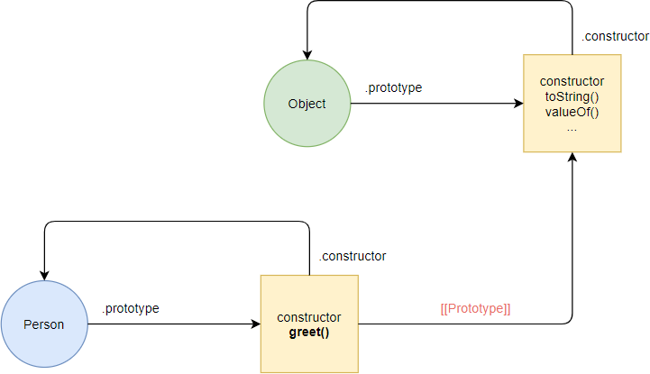
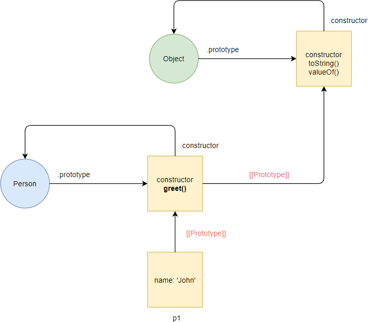
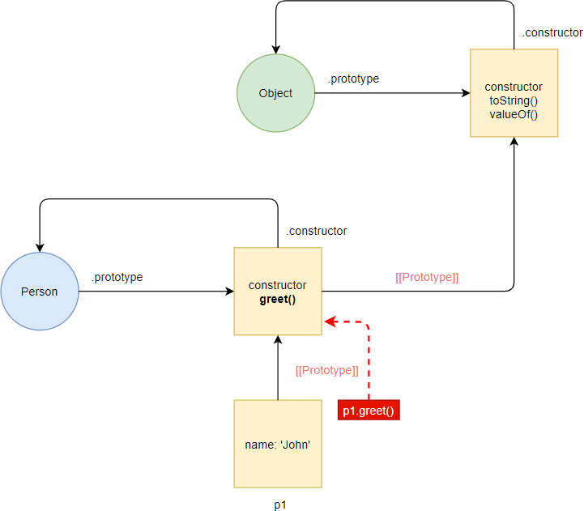
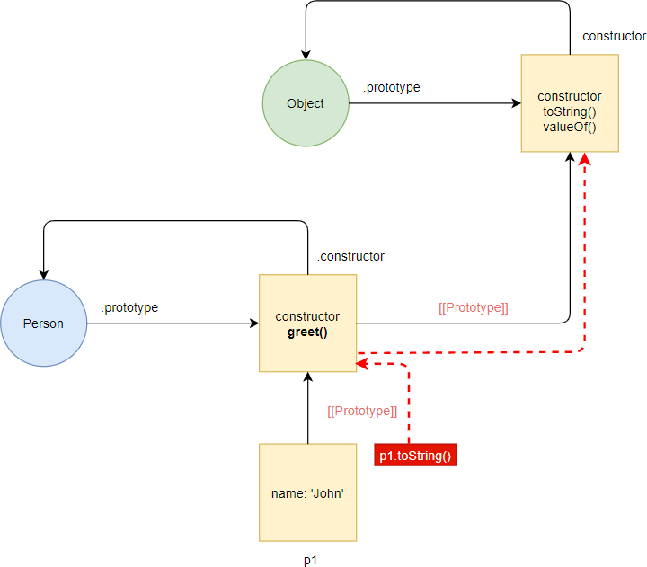
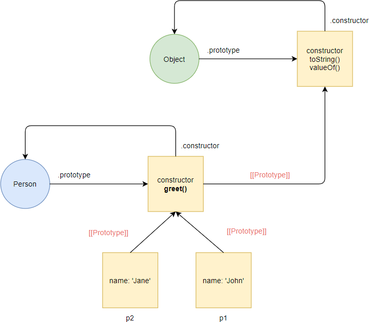

Nesse caso, o JavaScript adiciona o greet() método ao Person.prototype objeto:
Internamente, o mecanismo JavaScript cria um novo objeto denominado p1 e vincula o p1 objeto ao Person.prototype objeto por meio da vinculação do protótipo:
Por p1 não ter o greet() método, o JavaScript segue a ligação do protótipo e o encontra no Person.prototype objeto. Como o JavaScript pode encontrar o greet() método no Person.prototype objeto, ele executa o greet() método e retorna o resultado:
Nesse caso, o JavaScript segue a cadeia de protótipos para procurar o toString() método no Person.prototype. Como o Person.prototype não possui o toString() método, o JavaScript segue a cadeia de protótipo e procura o toString() método no Object.prototype objeto. Como o JavaScript pode encontrar o toString() método no Object.prototype, ele executa o toString()método.
O seguinte cria outra instância da Person propriedade cujo nome é 'Jane':
